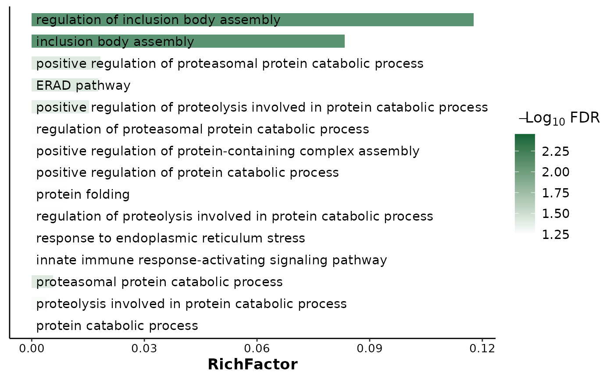

Plot barplot for enrihment result
ORA_barplot.RdPlot barplot for enrihment result
Usage
ORA_barplot(
enrich.obj,
x = "RichFactor",
color.by = "p.adjust",
show.term.num = 15,
label_format = 30,
colors = c("white", "#126536"),
color.title = color.by,
bar.width = 0.6,
add.bar.border = FALSE,
y.label.position = "right",
title = NULL,
legend.position = "right",
ggtheme = theme_classic(),
...
)Arguments
- enrich.obj
An object from clusterProfiler.
- x
variable for x-axis, one of 'EnrichFactor', 'GeneRatio', 'pvalue', 'p.adjust', 'Count'.
- color.by
Variable that used to color enriched terms, one of 'GeneRatio', 'pvalue', 'p.adjust', 'Count'.
- show.term.num
A number or a list of terms. If it is a number, the first n terms will be displayed. If it is a list of terms, the selected terms will be displayed.
- label_format
a numeric value sets wrap length, alternatively a custom function to format axis labels. by default wraps names longer that 30 characters.
- colors
A color vector for the bars.
- color.title
Title of color annotation legend.
- bar.width
Width of bars.
- add.bar.border
Logical. Whether to add the black border of bars.
- y.label.position
Y label position. right, on or left.
- title
Title of the plot.
- legend.position
option of legend. 'none', 'right', 'left' or two numeric variables.
- ggtheme
ggtheme of plot.
- ...
Other argument of
ggplot2::theme.
Examples
genes <- c("CANX", "HSPA1B", "KLRC2", "PSMC6", "RFXAP", "TAP1")
res <- simple_ORA(genes, enrich.type = "GO")
#> ℹ Updating gene symbols...
#> Maps last updated on: Fri May 17 15:09:37 2024
#> ℹ Transforming "SYMBOL" to ENTREZID...
#> 'select()' returned 1:1 mapping between keys and columns
#> ℹ Performing GO-"BP" enrichment...
#> ℹ 6 significant terms were detected...
#> ℹ Symplifying GO results...
#> ℹ Return a list with raw enrich result and symplify result ...
#> ✔ Done!
ORA_barplot(res$GO, y.label.position = 'on', x = 'RichFactor')
